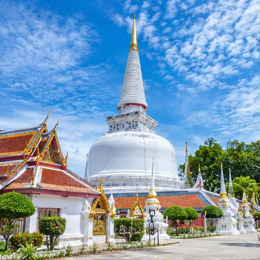

09 JAN 2027
ออกเดินทางสู่เมืองนคร
ช่วงเช้าและช่วงบ่ายเดินทางแยกตามเที่ยวบิน/สนามบิน

ช่วงเช้า
แจ็ค + ปัง
เดินทางไปสนามบินดอนเมือง · รถ 1 คัน
ช่วงเช้า
เอิง + บีม + ฟลุ๊ค
เดินทางไปสนามบินสุวรรณภูมิ · รถ 1 คัน
ช่วงบ่าย
บอล + บิ๊ก + กี้
เดินทางไปสนามบินสุวรรณภูมิ · รถ 2 คัน
หลังถึง
เช็คอิน B3 Hotel
ที่พักในตัวเมืองนครศรีธรรมราช
แผนที่ที่พัก ↗16:30
ไหว้พระธาตุ — วัดพระมหาธาตุวรมหาวิหาร
สักการะพระบรมธาตุ เจดีย์สำคัญคู่เมืองนครศรีธรรมราช
นำทางไปวัดพระมหาธาตุ ↗เย็น
เดินถนนคนเดิน + รับประทานอาหาร
ร้านที่เสนอ: ครัวปากพยิง (ค่อนข้างไกล) หรือเลือกร้านในตัวเมืองตามความสะดวก
แผนที่ครัวปากพยิง ↗ค่ำ
กลับเข้าที่พัก พักผ่อน
เตรียมตัวสำหรับงานแต่งในเช้าวันถัดไป